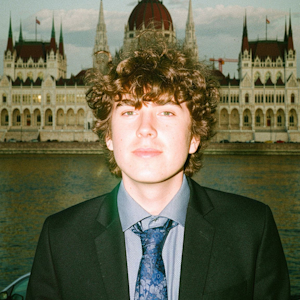
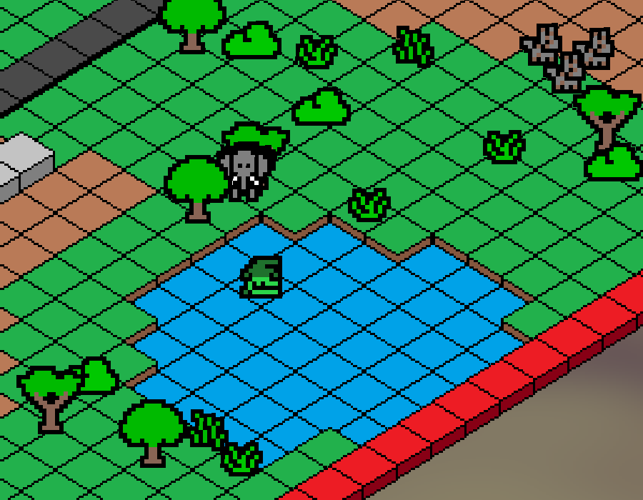
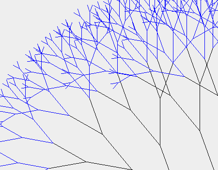

Szia, Bence vagyok, az ELTE programtervező informatikus hallgatója. Főként Java és JavaScript alapú fejlesztéssel foglalkozom, de aktívan hozzájárulok nyílt forráskódú C++ projektekhez is. Szeretem a gyakorlatias kihívásokat, legyen szó egy agilis csapat vezetéséről Scrum Masterként, vagy egy saját OpenGL űrszimuláció megépítéséről. Jelenleg junior szoftverfejlesztői pozíciót keresek, ahol tovább fejlődhetek.
Hi, I'm Bence, a Computer Science student at ELTE. I focus on Java and JavaScript development, while also actively contributing to open-source C++ projects. I enjoy hands-on challenges, whether that involves leading an agile team as a Scrum Master or building a custom OpenGL space simulation from scratch. I am currently seeking a junior software developer role to further grow my skills.

